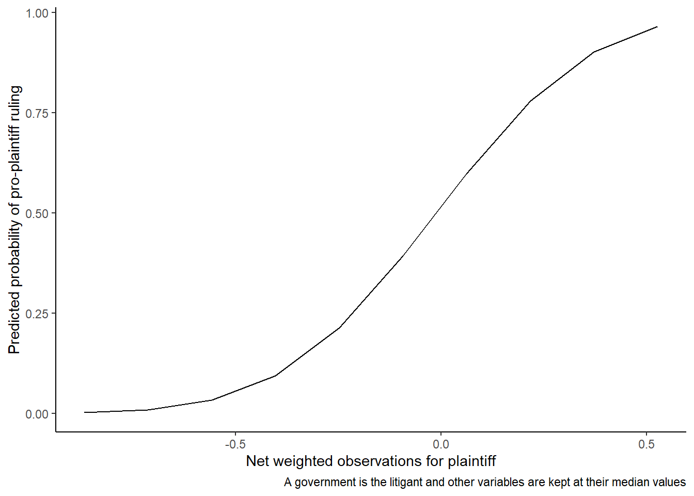

library(dplyr)
library(haven)
dodgingrules <- read_dta("../data/dodgingrules.dta")
binder_model <- glm(filisave ~ running18 + gop + wings + leader +
stdrank + servedmin + running18:gop,
data = dodgingrules,
family = binomial(link = "logit"))Visualizing quantities of interest based on regression models
We have seen how we can use coefficient plots to present the coefficients and associated confidence intervals from our regression models. Such coefficient plots are useful for presenting models and for comparing coefficients and confidence intervals across specifications. Plotting conditional coefficients is often crucial to understand models with interaction terms.
An important limitation is that coefficients from non-linear models (such as logistic and probit regressions) are often hard to interpret and are typically not on the same scale as the quantities of interest that we are actually interested. For instance, when estimating logistic regression models we are typically more interested in how our independent variables correlate with the probability of our outcome than in how our independent variables influence the logit of the outcome. Similar considerations will apply to various other generalized linear models.
King, Tomz, and Wittenberg (2000) therefore recommend that we calculate quantities of interest (such as predicted probabilities) based on our models and visualize these quantitative of interest. Typically, we can only calculate these quantities of interest when fixing the values on our covariates, requiring us to create interesting scenarios for illustrating results. Using statistical simulation techniques we can communicate the uncertainty surrounding our results.
Let’s consider some examples.
Consider the logistic regression model estimated by Binder (2018) (which we replicated here):
We have already considered how we can present the coefficients from this model. But how can we how much greater the probability is republicans than ran for reelection in 2018 compared to republicans that didn’t run for reelection in 2018?
Consider similarly the probit model estimated by Carrubba, Gabel, and Hankla (2008) (which we replicated here):
load("../data/CarrubbaGabelHankla.RData")
ecj_data <- table
ecj_probit <- glm(ECJPlAgree ~
normnetwobs * govislit +
percham +
CommIsPl +
CommIsDef +
CommObsPl +
CommObsDef,
family = binomial(link = "probit"),
data = ecj_data )How much does the predicted probability of pro-plaintiff ruling increase with increases in the normnetwobs variable?
Calculating quantities of interest
Neither of these questions can answered based on the coefficients alone. To calculate predicted probabilities, we need to:
- Fix one or more scenarios. This simply means fixing the values for all the predictors included in the model.
- Multiply our scenario(s) with the coefficients from the model to get the linear predictors
- Convert the linear predictor to your quantity of interest using the formula appropriate for your model. The specific formula will vary depending on the type of model. For logistic regression models, the formula will be
exp(x)/(1+exp(x))(which people sometimes instead express as1/(1+exp(-x)).
Logistic regression with binary independent variable of interest
We will start with our Binder (2018) example. We are interested in fixing the gop variable (identifying Republicans) to 1 and vary the running18 variable. This variable only takes the values 0 and 1, so we will vary it between those values. The interaction term is just gop multiplied with running18 and will accordingly also vary between 0 and 1. We also need to fix the variables for other covariates. Here we will just the median() value for all other covariates but many different choices could be reasonable and the choices you make here will influence your predicted values.
We can use cbind() to create our two scenarios:
1coefficients(binder_model)
2binder_scenarios <- cbind(
3 1,
4 c(0,1),
5 1,
6 median(dodgingrules$wings, na.rm = TRUE),
median(dodgingrules$leader, na.rm = TRUE),
median(dodgingrules$servedmin, na.rm = TRUE),
median(dodgingrules$stdrank, na.rm = TRUE),
7 c(0,1))- 1
- The order will matter, so we print out the coefficients to see the order.
- 2
-
Using
cbind()will bind the values together in amatrix - 3
- The intercept should be multiplied with 1, so we add we start with a 1
- 4
-
running18should vary between 0 and 1, so we add a vectorc(0,1). - 5
-
We want
gopfixed at 1, so add a 1 here. - 6
-
We set
wings,leader,servedmin, andstdrankto theirmedian()values. - 7
- The interaction term should also vary between 0 and 1.
(Intercept) running18 gop wings leader
0.9956295 1.4104023 0.1539010 -4.8437615 -1.6140983
stdrank servedmin running18:gop
0.2408884 1.2846637 -2.4160361 1print(binder_scenarios)
2binder_linear_predictors <- coefficients(binder_model) %*% t(binder_scenarios)
3print(binder_linear_predictors)
4inverse_logit <- function(x){exp(x)/(1+exp(x))}
5binder_predicted_probabilities <- inverse_logit(binder_linear_predictors)
print(binder_predicted_probabilities)- 1
-
We now produced a
matrixwhich looks like this. Each row is a scenario. To get the linear predictor for each row. we need to multiply the matrix with the vector of coefficients. This involves using matrix multiplication, which you may not be intimately familiar with, but R will take care of all that for you as long as you remember to use%*%as the matrix multiplication operator andt()means taking the transpose of the matrix flipping it on the side so that the rows becomes the columns and vice versa. - 2
- The linear predictors are simply the coefficients multiplied by the transpose of our scenarios.
- 3
- Printing them out we get two linear for signing the letter. The first (1.7087273) is the linear predictor of signing the letter for Republicans that didn’t run for reelection in 2018 keeping all other variables at their median values and the second (0.7030935) is the linear predictor of signing the letter for Republicans that did run for reelection in 2018 keeping all other variables at their median values.
- 4
- We define function for converting the linear predictors from logistic regressions to predicted probabilities (defining a function is useful as we will do this a lot).
- 5
- Plugging in the linear probabilities to our function we get the predicted probabilities for our two scenarios. They are 0.8466711 for Republicans that didn’t run for reelection in 2018 keeping all other variables at their median values and 0.8466711 for Republicans that did run for reelection in 2018 keeping all other variables at their median values.
[,1] [,2] [,3] [,4] [,5] [,6] [,7] [,8]
[1,] 1 0 1 0.394 0 1 1.733333 0
[2,] 1 1 1 0.394 0 1 1.733333 1
[,1] [,2]
[1,] 1.708727 0.7030935
[,1] [,2]
[1,] 0.8466711 0.6688733The above process could be simplified by simply using the predict() function:
1binder_scenarios_df <- as.data.frame(binder_scenarios)
2colnames(binder_scenarios_df) <- names(coefficients(binder_model))
3predict(binder_model, newdata = binder_scenarios_df, type = "response")- 1
-
predict()needs adata.framerather than amatrix - 2
-
predict()will look for the variables in thedata.frameso we need to give the variables names that match the coefficient names - 3
-
Setting the
newdatato our scenarios andtypeto “response”, we get predicted probabilities for our scenarios.
1 2
0.8466711 0.6688733 If you ever only the predicted probabilities, you should definitely use predict() rather than writing out the code for the calculations. However, writing out the code for the calculations will be necessary going forward as we also incorporate uncertainty using MASS to simulate coefficients.
Probit regression with continuous independent variable of interest
The Carrubba, Gabel, and Hankla (2008) example is different from the Binder (2018) in two respects:
- We are interested in a continuous independent variable (
normnetwobs), so will need multiple scenarios with different values along the range of this variable. - We are dealing with a probit model rather than a logistic regression, so the formula for converting linear predictors into predicted probabilities will different.
1ecj_scenarios <- cbind(
2 1,
3 seq(min(ecj_data$normnetwobs, na.rm = TRUE),
max(ecj_data$normnetwobs, na.rm = TRUE),
length.out = 10),
4 1,
5 median(ecj_data$percham, na.rm = TRUE),
median(ecj_data$CommIsPl, na.rm = TRUE),
median(ecj_data$CommIsDef, na.rm = TRUE),
median(ecj_data$CommObsPl, na.rm = TRUE),
median(ecj_data$CommObsDef, na.rm = TRUE),
seq(min(ecj_data$normnetwobs,na.rm = TRUE),
max(ecj_data$normnetwobs, na.rm = TRUE),
6 length.out = 10))
7print(ecj_scenarios)- 1
-
Again, we use
cbind()to create a matrix with our scenarios. - 2
- We add a 1 for the intercept.
- 3
-
Using
seq()we can create a sequence of 10 values for thenormnetwobsvariable ranging from themin()to themax()value. - 4
-
We set
govlitto 1 (which means that our calculations will reflect a scenario in which a government is a litigant). - 5
- We set all the other variables to their median values.
- 6
-
Again we have an interaction term, which will be the value on
normnetwobsmultiplied by the value ongovlitwhich we fixed to 1. So in other words, just the values onnormnetwobsrepeated. - 7
-
We now have 10 different rows in our matrix and the only thing that varies between them is the value on
normnetwobs.
[,1] [,2] [,3] [,4] [,5] [,6] [,7] [,8] [,9]
[1,] 1 -0.86842108 1 0.3846154 0 0 0 0 -0.86842108
[2,] 1 -0.71345031 1 0.3846154 0 0 0 0 -0.71345031
[3,] 1 -0.55847955 1 0.3846154 0 0 0 0 -0.55847955
[4,] 1 -0.40350878 1 0.3846154 0 0 0 0 -0.40350878
[5,] 1 -0.24853802 1 0.3846154 0 0 0 0 -0.24853802
[6,] 1 -0.09356725 1 0.3846154 0 0 0 0 -0.09356725
[7,] 1 0.06140351 1 0.3846154 0 0 0 0 0.06140351
[8,] 1 0.21637428 1 0.3846154 0 0 0 0 0.21637428
[9,] 1 0.37134504 1 0.3846154 0 0 0 0 0.37134504
[10,] 1 0.52631581 1 0.3846154 0 0 0 0 0.526315811ecj_linear_predictors <- coefficients(ecj_probit) %*% t(ecj_scenarios)
2ecj_predicted_probabilities <- pnorm(ecj_linear_predictors )- 1
- Like before we multiply the coefficients with the transponse of the matrix with the scenarios.
- 2
-
Since we have a probit model, we can convert he linear predictors to probabilities using
pnorm().
We can plot the predicted probabilities against the different values on normnetwobs to see how the predicted probability of a pro-plaintiff ruling varies depending on the net support from the member states.
library(dplyr)
library(ggplot2)
1data.frame(probabilities = as.vector(ecj_predicted_probabilities),
normnetwobs = as.vector(ecj_scenarios[,2])) %>%
ggplot(aes(x = normnetwobs,
y = probabilities)) +
geom_line()+
theme_classic()+
labs(y = "Predicted probability of pro-plaintiff ruling",
x = "Net weighted observations for plaintiff",
caption = "A government is the litigant and other variables are kept at their median values")- 1
-
ggplot2needs adata.frame. Bothecj_predicted_probabilitiesand the second column ofecj_scenarioswhich contains the sequence ofnormnetwobsare matrices, so we need to force them to become vectors as we add them to adata.frame

While Figure 1 is nice, it lacks uncertainty estimates! Communicating the estimated uncertainty surrounding our predictions is a crucial part of scientific communication.
Simulations using the MASS package to get uncertainty estimates
To get uncertainty estimates, we can exploit the fact that the coefficients from our maximum likelihood models follow a multivariate normal distribution with means given by the coefficients from the models and variance-covariance equal to the covariance-covariance matrix of the coefficients (see Ward and Ahlquist 2018, 58–61). Using the MASS package we can simulate this distribution and calculate our quantities of interest for different draws from the distribution. This will introduce variation in our quantities of interest that reflect the uncertainty in our model.
Logistic regression with binary independent variable of interest
Again, we will start with our Binder (2018) example, which we now expand to include simulated confidence intervals.
library(MASS)
library(sandwich)
1set.seed(4761)
2binder_sim_betas <- mvrnorm(n = 1000,
3 mu = coefficients(binder_model),
4 Sigma = vcovHAC(binder_model, cluster = dodgingrules$stateid))
5binder_sim_linear_predictors <- binder_sim_betas %*% t(binder_scenarios)
6binder_sim_predicted_probabilities <- inverse_logit(binder_sim_linear_predictors)
7dim(binder_sim_predicted_probabilities)
head(binder_sim_predicted_probabilities)- 1
-
We will draw random numbers. We can ensure that the results reproduce by using
set.seed(), which we just supply an arbitrary number. - 2
-
We simulate coefficients using
mvrnorm().n = 1000means that we get 1000 different draws from the distribution (i.e. 1000 different sets of coefficients). - 3
-
The mean (
mu) values should be our estimated coefficients - 4
-
The variance-covariance (
Sigma) should be given by our variance-covariance matrix. Here we use use the clustered variance covariance matrix usingvcovHAC()fromsandwich. - 5
- We calculated linear predictors like before, but now for all the different draws from the distribution
- 6
-
We calculate predicted probabilities using our
inverse_logit()function which we defined above. - 7
-
Printing out dimensions and first rows of
binder_sim_predicted_probabilities, we see that we now have matrix with 1000 rows and 2 columns. The rows are the different draws and the columns are the two different scenarios.
[1] 1000 2
[,1] [,2]
[1,] 0.7691250 0.89562705
[2,] 0.8274384 0.57637870
[3,] 0.8459521 0.09446499
[4,] 0.8890986 0.48234520
[5,] 0.7785926 0.25106514
[6,] 0.7577103 0.29323668We need to summarize this information to make a visualization. Using apply() and quantile() we can get the median predictions and confidence intervals. If we want a 95% confidence intervals, we need to discard 5/2 = 2.5 per cent of draws on each side of the distribution (so the borders of our confidence interval be at the 2.5% and the 97.5% lowest/highest values in the distribution, which correspond to the probabilities 0.025 and 0.975).
1binder_plot_values <- apply(binder_sim_predicted_probabilities,
2 MARGIN = 2,
3 FUN = quantile,
4 probs = c(.025,.5,.975))- 1
- We want to apply a function across our matrix with predicted probabilities.
- 2
- We want to apply the function across the (two columns).
- 3
-
The function to use is
quantile() - 4
- We can add additional arguments to the function. We want the 0.025, the 0.5, and the 0.975 quantiles of the distribution.
The resulting matrix looks like this:
print(binder_plot_values) [,1] [,2]
2.5% 0.3819593 0.1557909
50% 0.8474618 0.6536688
97.5% 0.9810671 0.9435478To use these values in ggplot2, we need to take the transpose and convert the matrix to a data.frame. It will also be helpful to add labels explaining what the different scenarios are:
binder_plot_values <- binder_plot_values %>%
t() %>%
as.data.frame() %>%
mutate(scenario = c("Republicans not running for reelection in 2018",
"Republicans running for reelection in 2018"))We are now ready to make a graph!
ggplot(binder_plot_values,
aes(x = scenario,
1 y = `50%`,
ymin = `2.5%`,
ymax = `97.5%`)) +
2 geom_errorbar(width = 0)+
geom_point()+
ylim(0,1)+
labs(y = "Predicted probability of signing\nletter committing to save the filibuster",
x = "",
caption = "Other variables fixed at their median values")+
theme_classic()- 1
-
Recall that R doesn’t like variable names that start with number and include symbols such as “%”. Those are, however, the column names we got when transposing the matrix produced by
apply()! We can circumvent the problem by wrapping the variable names with the `` sign. Alternatively we could have renamed the columns in thedata.framebefore supplying it toggplot(). - 2
-
We use
geom_errobar()to create confidence intervals. The boundaries are defined byyminandymax.
Figure 2 adds important information compared to the coefficient plot or regression table. It shows that while the predicted probability of signing the letter is indeed lower for republicans running for election than for republicans not running, there is massive uncertainty surrounding both predictions.
Probit regression with continuous independent variable of interest
We can do the same for the Carrubba, Gabel, and Hankla (2008). Since our independent variable of interest in this example is a continuous, we would want a curve with a “ribbon” indicating the confidence interval rather than points with error bars:
1set.seed(315)
ecj_sim_betas <- mvrnorm(n = 1000,
mu = coefficients(ecj_probit),
Sigma = vcovHAC(ecj_probit, cluster = ecj_data$caseid))
ecj_sim_linear_predictors <- ecj_sim_betas %*% t(ecj_scenarios)
2ecj_sim_predicted_probabilities <- pnorm(ecj_sim_linear_predictors)
ecj_plot_values <- apply(ecj_sim_predicted_probabilities,
MARGIN = 2,
FUN = quantile,
probs = c(.025,.5,.975))
ecj_plot_values<- ecj_plot_values%>%
t() %>%
as.data.frame() %>%
mutate(normnetwobs = as.vector(ecj_scenarios[,2]))
ggplot(ecj_plot_values,
aes(x = normnetwobs,
y = `50%`,
ymin = `2.5%`,
ymax = `97.5%`)) +
3 geom_ribbon(alpha = 0.2)+
geom_line(size = 1)+
theme_classic()+
labs(y = "Predicted probability of pro-plaintiff ruling",
x = "Net weighted observations for plaintiff",
caption = "A government is the litigant and other variables are kept at their median values")- 1
- We set a different seed just to mix things up.
- 2
-
We remember to use the appropriate function for calculating predicted probabilities based on what kind of model we have. For a probit, you use
pnorm(). - 3
-
geom_ribbon()can be used to add a confidence interval around a line. Thealphadetermines how “transparent” the confidence interval will be.
Drawing from the posterior distributions of Bayesian models
Some things are easier to do in a Bayesian framework and plotting quantities of interest and associated uncertainty estimates from our models is one of those things! If estimating our models using stan_glm() (as recommended by Gelman, Hill, and Vehtari 2020 and as discussed in STV4022), the posterior distribution of all our coefficients will be saved as part of the model object. Using posterior_line_pred we can easily draw from the posterior distribution and calculate quantities of interest based on a scenario:
1library(rstanarm)
2binder_stan_model <- stan_glm(filisave ~ running18 + gop + wings + leader + stdrank +
servedmin + running18:gop,
family = binomial(link = "logit"),
data = dodgingrules)
3binder_stan_predicted_probabilities <- posterior_linpred(binder_stan_model,
4 draws = 1000,
5 newdata = binder_scenarios_df,
6 transform = TRUE )- 1
-
Loading the
rstanarmpackage. - 2
-
Reestimating the Binder (2018) model using
stan_glm(). - 3
-
We can use
posterior_linepred()to draw from the posterior distribution of the linear predictors - 4
- We want 1000 draws
- 5
-
We need to supply the data as a
data.frame, so we use thedata.framewe already created above. - 6
-
Setting
transform = TRUEwill transform each draw using the inverse link function. We thus get predicted probabilities rather than the linear predictor.posterior_linpredwill do this based on the model type, so we don’t need to specify the appropriate function ourselves.
Just like above, we get a matrix with 1000 rows and 2 columns. The rows are the different draws and the columns are the different scenarios.
dim(binder_stan_predicted_probabilities)[1] 1000 2head(binder_stan_predicted_probabilities)
iterations 1 2
[1,] 0.8559184 0.5221027
[2,] 0.9545025 0.9846195
[3,] 0.6922851 0.1616163
[4,] 0.9425886 0.6928376
[5,] 0.7896946 0.5672581
[6,] 0.9340159 0.7578442We can manipulate it and make a graph exactly like we did before:
binder_stan_plot_values <- apply(binder_stan_predicted_probabilities,
MARGIN = 2,
FUN = quantile,
probs = c(.025,.5,.975)) %>%
t() %>%
as.data.frame() %>%
mutate(scenario = c("Republicans not running for reelection in 2018",
"Republicans running for reelection in 2018"))
ggplot(binder_stan_plot_values,
aes(x = scenario,
y = `50%`,
ymin = `2.5%`,
ymax = `97.5%`)) +
geom_errorbar(width = 0)+
geom_point()+
ylim(0,1)+
labs(y = "Predicted probability of signing\nletter committing to save the filibuster",
x = "",
caption = "Other variables fixed at their median values")+
theme_classic()stan_glm()Figure 4 looks very much like Figure 2 (which should come as no surprise as we just did the same things in the two different frameworks).
predictions() from marginaleffects
As usual (Arel-Bundock, Enevoldsen, and Yetman 2018; Arel-Bundock 2022), Vincent Arel-Bundock has written an excellent R package that simplifies things for us. Using predictions() from the marginaleffects effects package (Arel-Bundock 2023), we can easily get predictions and uncertainty estimates for various models estimated using maximum likelihood (e.g. glm()) or in a Bayesian framework (e.g. stan_glm()). marginaleffects also has other functions for various other quantities of interest.
library(marginaleffects)
1binder_predictions <- predictions(binder_model,
2 newdata = binder_scenarios_df,
3 vcov = vcovHAC(binder_model,
cluster = binder_data$stateid))
4print(binder_predictions)
5names(binder_predictions)
ggplot(binder_predictions,
6 aes(x = as.factor(running18),
y = predicted,
ymin = conf.low,
ymax = conf.high)) +
geom_errorbar(width = 0) +
geom_point() +
7 scale_x_discrete(labels = c("Republican not running for reelection in 2018",
"Republican running for reelection in 2018"))+
ylim(0,1) +
labs(y = "Predicted probability of signing\nletter committing to save the filibuster",
x = "",
caption = "Other variables fixed at their median values")+
theme_classic()- 1
-
We use the function
predictions()from themarginaleffectspackage. We first supply the model. - 2
-
The we supply our scenarios to the
newdataargument. The scenarios need to bedata.framewith column names that match the coefficient names for the model. - 3
-
If we want we can change the variance covariance-matrix. Here we clustered the variance covariance matrix by state, using
vcovHAC()from thesandwichpackage. - 4
-
We get the results printed in a nice
data.frame - 5
-
estimateis the column with the point estimate andconf.lowandconf.highcontain the lower and upper bounds of the confidence inteval. The dataset also contains columns with all the variables and the values they have in each scenario. - 6
-
The
running18variable is numeric in thedata.frame, but we can makeggplot()treat it as a categorical variable by usingas.factor(). - 7
- We adjust the value labels on the x-axis to get informative labels rather than 0 and 1.
rowid type predicted std.error statistic p.value conf.low conf.high
1 1 response 0.8466711 0.1447542 5.849025 4.944627e-09 0.3830265 0.9800461
2 2 response 0.6688733 0.2438419 2.743061 6.086929e-03 0.1892728 0.9458809
(Intercept) running18 gop wings leader stdrank servedmin running18:gop
1 1 0 1 0.394 0 1 1.733333 0
2 1 1 1 0.394 0 1 1.733333 1
filisave
1 0
2 0
[1] "rowid" "type" "predicted" "std.error"
[5] "statistic" "p.value" "conf.low" "conf.high"
[9] "(Intercept)" "running18" "gop" "wings"
[13] "leader" "stdrank" "servedmin" "running18:gop"
[17] "filisave" marginaleffects package.Figure 5 again looks very much like Figure 2, which is what we would expect as we are doing exactly the same thing. However, using the marginaleffects package saves us from writing quite a bit of code!
If we want to the same thing with the Carrubba, Gabel, and Hankla (2008) example, we just have to remember to turn our scenarios into a data.frame with appropriately named columns (i.e. column names that match the coefficient names):
library(marginaleffects)
ecj_scenarios_df <- as.data.frame(ecj_scenarios)
colnames(ecj_scenarios_df) <- names(coefficients(ecj_probit))
ecj_predictions <- predictions(ecj_probit,
newdata = ecj_scenarios_df,
vcov = vcovHAC(ecj_probit,
cluster = ecj_data$caseid))
names(ecj_predictions) [1] "rowid" "type" "predicted"
[4] "std.error" "statistic" "p.value"
[7] "conf.low" "conf.high" "(Intercept)"
[10] "normnetwobs" "govislit" "percham"
[13] "CommIsPl" "CommIsDef" "CommObsPl"
[16] "CommObsDef" "normnetwobs:govislit" "ECJPlAgree" ggplot(ecj_predictions,
aes(x = normnetwobs,
y = predicted,
ymin = conf.low,
ymax = conf.high)) +
geom_ribbon(alpha = 0.2, fill = "pink") +
geom_line(color = "red") +
ylim(0,1) +
labs(y = "Predicted probability of pro-plantiff ruling",
x = "",
caption = "A government as litigant. Other variables fixed at their median values")+
theme_classic()marginaleffects package.
Other functions in the
marginaleffects package
The marginaleffects also contains a variety of other functions for calculating and visualizing other quantities of interest based on your regression models. We recommend having a look at the documentation, which is available here, to explore all the possibilities!
References
Arel-Bundock, Vincent. 2022. “Modelsummary: Data and Model Summaries in R.” Journal of Statistical Software 103: 1–23.
———. 2023. Marginaleffects: Predictions, Comparisons, Slopes, Marginal Means, and Hypothesis Tests. https://CRAN.R-project.org/package=marginaleffects.
Arel-Bundock, Vincent, Nils Enevoldsen, and CJ Yetman. 2018. “Countrycode: An R Package to Convert Country Names and Country Codes.” Journal of Open Source Software 3 (28): 848.
Binder, Sarah. 2018. “Dodging the Rules in Trump’s Republican Congress.” The Journal of Politics 80 (4): 1454–63.
Carrubba, Clifford J, Matthew Gabel, and Charles Hankla. 2008. “Judicial Behavior Under Political Constraints: Evidence from the European Court of Justice.” American Political Science Review 102 (4): 435–52.
Gelman, Andrew, Jennifer Hill, and Aki Vehtari. 2020. Regression and Other Stories. Cambridge University Press.
King, Gary, Michael Tomz, and Jason Wittenberg. 2000. “Making the Most of Statistical Analyses: Improving Interpretation and Presentation.” American Journal of Political Science, 347–61.
Ward, Michael D, and John S Ahlquist. 2018. Maximum Likelihood for Social Science: Strategies for Analysis. Cambridge University Press.